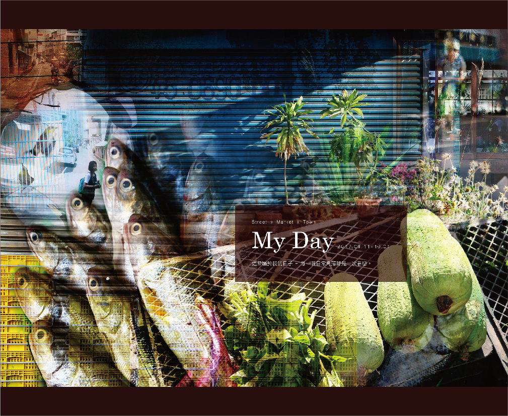

ZNIYU

My Day 攝影日常
2017.09 - 2017.10
2017.09 - 2017.10
作品背景攝影課程作業
作品類別紀實攝影
作品類別紀實攝影
設計理念
來到雲林斗六求學的第二年，對我而言逛早市買食材是一件令人充滿能量的體驗。起了一大早，進入市場聽著伯伯阿姨們親切的叫賣，買賣當中還會閒聊兩三句，逛完整個市場後，雙手總是提著滿滿的戰利品，回到家處理成為當晚的一碗幸福滋味。
而我也特別喜歡斗六這樣，一個小小城鎮的感覺，穿梭在巷口小路中，總會遇見意想不到的小事物，像是一對綠繡眼細小的叫聲，像是藍色鐵捲門前的綠意構成一個美好的畫面。